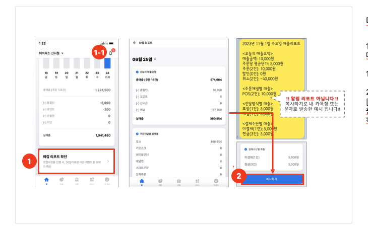
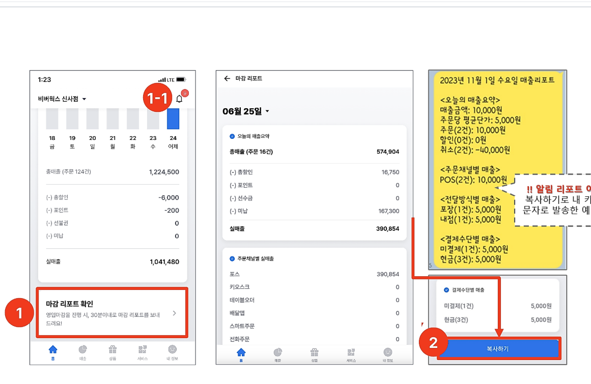
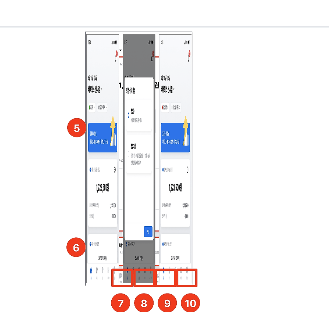
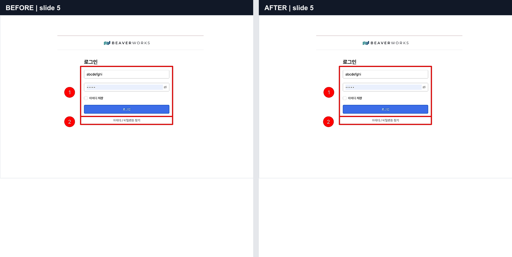
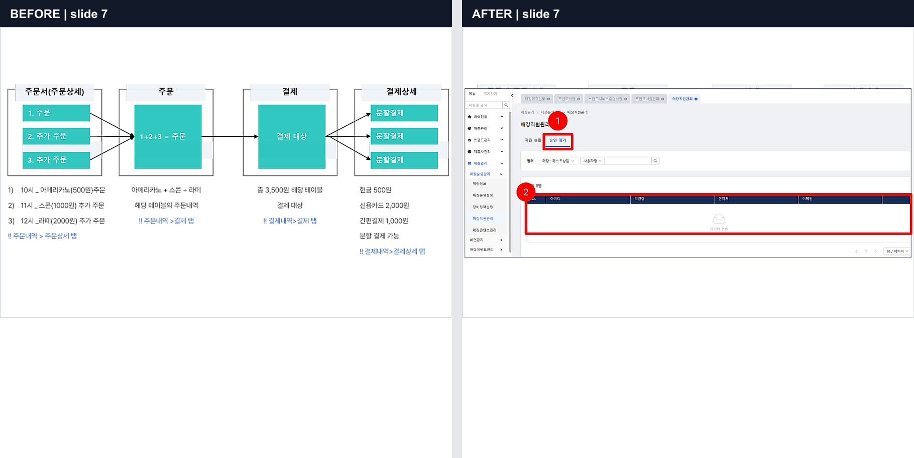
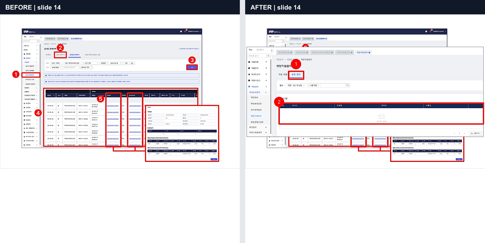
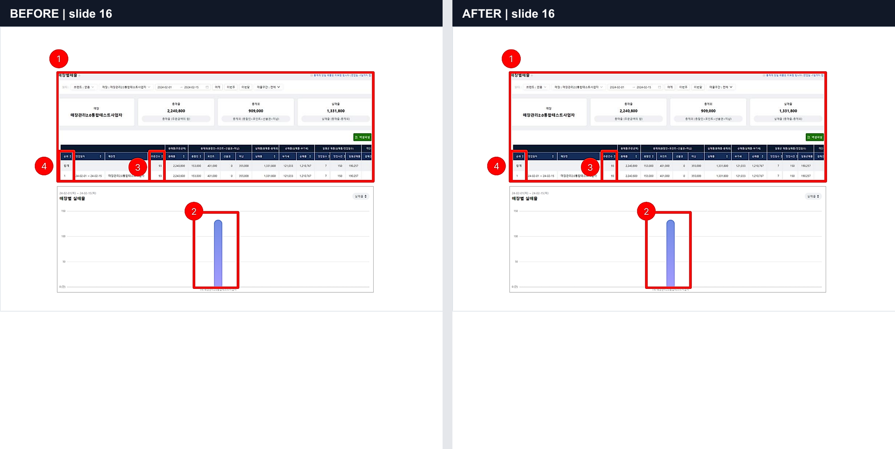
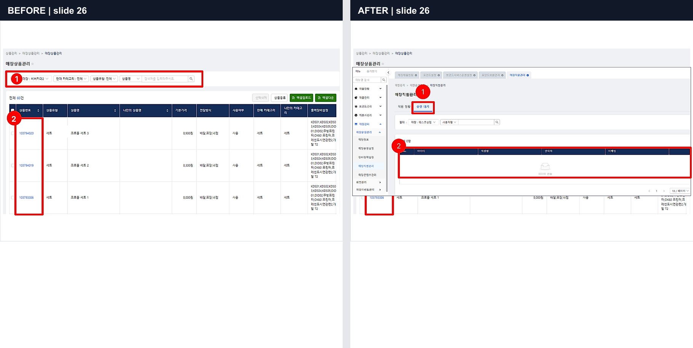
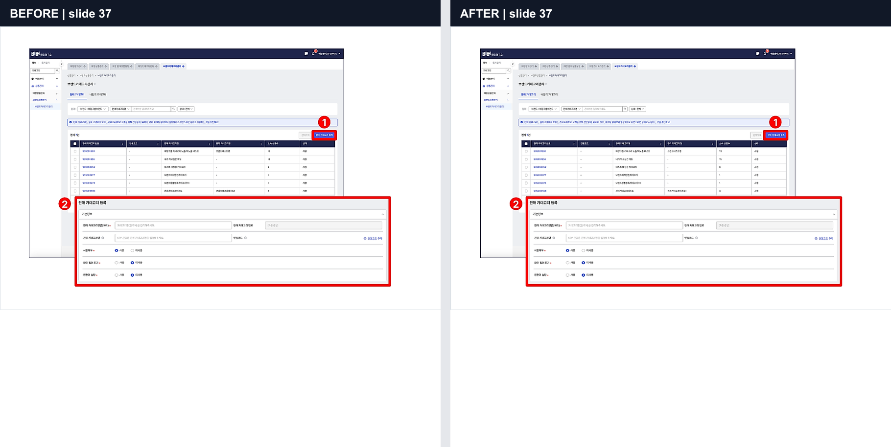

PPT 이미지 업데이트 안정화
같은 파일명·같은 바이트·같은 크기·이름 변경·실패 후 재실행까지 실제 PowerPoint 수정본으로 검증한 마스터 기록입니다.
검증 대상: 04_비버_매장관리_통합가이드.pptx · Microsoft Graph 렌더 + 고정 영역 캡처
127.0.0.1:3100, Supabase는 127.0.0.1:54321, 오브젝트 저장소는 localhost:9000을 사용했고, 실제 PowerPoint 렌더만 Microsoft Graph를 사용했습니다. 따라서 이 문서의 판정은 “운영과 같은 코드 경로의 격리 QA 통과”이며 “이번 세션에서 운영 재검증 완료”를 의미하지 않습니다.
1. 사건과 검증 질문

PowerPoint에서 화살표·어노테이션 위치와 이미지 영역이 바뀐 상태.

검토/발행 이미지가 수정 전 배치처럼 보여 “이전 이미지 재사용”이 의심된 사건.

테스트 fixture 자체가 변형되어 화면 비율이 찌그러졌던 출력. 이번 QA에서는 네이티브 PowerPoint 편집본을 전체 렌더 비교해 fixture 손상부터 차단했습니다.
이번 검증은 다음 세 질문을 분리해서 답하도록 설계했습니다.
- 고정 이미지 박스가 모든 콘텐츠 페이지에서 동일한 좌표·크기로 캡처되는가?
- 화살표의 미세 변경부터 화면 이미지 교체까지, 선언한 30개 페이지에만 정확히 반영되는가?
- 파일명·바이트·파일 크기가 같아도 매 실행이 새로운 source/job/run으로 처리되고, 실패해도 직전 정상 결과가 보존되는가?
2. 이번에 고친 실제 결함
고정 캡처와 OOXML 탐지의 잘못된 결합
group_bake도 내부적으로 이미지 후보 탐지 결과에 묶여 있어, 이미지 교체·재그룹화 뒤 일부 페이지의 asset이 누락될 수 있었습니다. 이제 모든 content 슬라이드를 OOXML 이미지 구조와 무관하게 동일 박스로 캡처합니다.
그룹 안 번호 어노테이션 오분류
작은 원형 숫자 1·2가 섹션 번호로 오인되어 콘텐츠 페이지가 캡처 대상에서 빠질 수 있었습니다. 그룹 내부의 작은 숫자는 섹션 근거에서 제외하고, 실제 큰 섹션 번호만 유지했습니다.
검증 fixture 손상 탐지 부재
PowerPoint 웹에서 슬라이드를 교체하는 과정의 레이아웃 관계 불일치까지 136장 전체 픽셀 비교로 검출했습니다. 손상된 16번 슬라이드는 원본 레이아웃 관계로 복구했고 비수정 106장은 완전 동일을 요구했습니다.
변경량 비율 중심의 약한 판정
“전체 asset 절반 이상 변경” 같은 간접 기준을 폐기하고, 선언한 30장은 모두 변경·나머지 106장은 모두 동일이라는 정확한 집합 비교로 교체했습니다.
3. 고정 캡처 계약
- 렌더러: Microsoft Graph / PowerPoint — LibreOffice 경로 사용 안 함
- 모드: group_bake — 화살표·번호·강조 박스·교체된 화면 이미지를 렌더 결과 그대로 포함
- 대상: 역할 분류가
content인 모든 페이지, 총 120장 - 출력 크기: 전 asset 1335×860, crop padding 0
- 역할 분포: cover 3 · toc 2 · section 11 · content 120 · hidden 1
- 결과 구조: category 11 · function 72 · slide 136 · excluded 5
4. 실제 PowerPoint 수정본 무결성
| 파일 | 크기 | SHA-256 | 용도 |
|---|---|---|---|
| 기준본 | 19,426,932 B | eed465e0eef3bfcfb4734df79963326da208aae8151c455739a0855c23919bf5 | 비교 기준 |
| 네이티브 수정본 | 19,427,060 B | 0d1cf4d8b8bc62f3bd0bdd26b89977a02bef61355e05a7a99f8a4ed0ef4cb723 | 30페이지의 미세 화살표 변경·큰 이미지 교체 |
| 동일 크기 수정본 | 19,426,932 B | 6a9590f5aead605fc4776e4d91afa659a8747d00f81e1aaf4cb1524923b5bfc6 | 크기만으로 재사용하지 않는지 검증 |
3000×1688 렌더 136장을 전수 비교했습니다. 수정 대상으로 선언한 5–15, 17–24, 26–27, 29–37번은 30/30 변경됐고, 비대상 106장은 임계값 5 기준으로 106/106 동일했습니다. 16번은 복구 확인용 음성 대조군으로 픽셀 차이 0입니다.
5. 파일명·바이트·크기 7개 조합
| 케이스 | 파일명 | 바이트 | 크기 | 새 task/job/run | 캡처 | 결과 |
|---|---|---|---|---|---|---|
| 기준본 | 기준 | 기준 | 기준 | 고유 | 120/120 | PASS |
| 같은 이름 + 수정본 | 같음 | 다름 | 다름 | 고유 | 120/120 | PASS |
| 같은 이름 + 같은 파일 | 같음 | 같음 | 같음 | 고유 | 120/120 | PASS |
| 다른 이름 + 같은 파일 | 다름 | 같음 | 같음 | 고유 | 120/120 | PASS |
| 다른 이름 + 수정본 | 다름 | 다름 | 다름 | 고유 | 120/120 | PASS |
| 같은 크기 + 수정본 | 다름 | 다름 | 같음 | 고유 | 120/120 | PASS |
| 같은 이름·같은 파일 반복 | 같음 | 같음 | 같음 | 고유 | 120/120 | PASS |
7개 케이스의 task ID, job ID, source 경로, run prefix는 모두 서로 달랐습니다. 동일 바이트 출력은 기준본과 시각 지문이 일치했고, 수정본 3종은 선언한 30개 출력/asset만 변경됐습니다. 전체 비교 검사 67개 통과, 실패 0입니다.
6. 실제 파이프라인 캡처 전후
아래 이미지는 미리 저장한 임의 PNG가 아니라, 각 PPT를 업로드해 worker가 Graph 렌더 후 로컬 오브젝트 저장소에 생성한 group_bake asset을 다시 내려받아 비교한 결과입니다.






7. 재실행·중복·실패 복구
| Run | 행위 | API 계약 | DB/R2 결과 | 판정 |
|---|---|---|---|---|
| 1 | 기준 변환 | 성공 | 136 slides · 120 assets · /runs/1/ | PASS |
| 2 | 같은 task 재실행 | 첫 요청 201 · 즉시 중복 409 | 모든 row/object가 새 job과 /runs/2/만 참조, run 1 object 제거 | PASS |
| 3 | Graph token 의도적 실패 | 첫 요청 201 · 즉시 중복 409 · job failed | 직전 성공 run 2의 136 slides · 120 assets · 257 objects 완전 보존 | PASS |
| 4 | 정상 인증 복구 | 첫 요청 201 · 즉시 중복 409 | 모든 row/object가 새 job과 /runs/4/만 참조 | PASS |
발행 로직은 발행 시작 시점의 최신 succeeded conversionJobId를 JSONB payload에 고정하고, task 전체 결과로 fallback하지 않는 계약 테스트도 통과했습니다. 실제 Notion 발행은 운영 보호 원칙에 따라 실행하지 않았습니다.
8. 자동 검증 및 빌드
PASS npm run verify:all
requirements, V2 purpose, Graph renderer, fixed crop, role classifier, publish pin, local fixture flow, TypeScript 전체 통과.
PASS npm run build
Next.js 16.2.9 production build, TypeScript, page data 수집, static generation 완료.
PASS ZIP integrity
기준본·수정본·동일 크기 수정본의 PPTX 컨테이너 무결성 확인.
PASS 전체 렌더 게이트
136장 동일 크기, 대상 30/30 변경, 비대상 106/106 동일.
9. 결론과 남은 위험
- Microsoft Graph 자체의 일시적인 upstream 오류는 외부 위험으로 남습니다. 실제 QA에서도 한 번 발생했으며 resume 재시도로 성공했습니다.
- 이 문서는 운영 비간섭 QA입니다. 운영에서 사용자가 다음 실제 PPT를 변환할 때에는 새 task/job/run과 수정 페이지 asset을 로그로 대조하는 짧은 사후 확인이 권장됩니다.
- 새 템플릿이 현재 고정 이미지 박스 규격을 벗어나는 경우에는 좌표 계약을 별도로 갱신해야 합니다.
10. 원본 증거
docs/qa/image-update-stability-20260722/이 문서는 이번 이미지 업데이트 안정화 작업의 단일 마스터 기록이며, 과거의 fixture 변형 기반 QA보다 우선합니다.